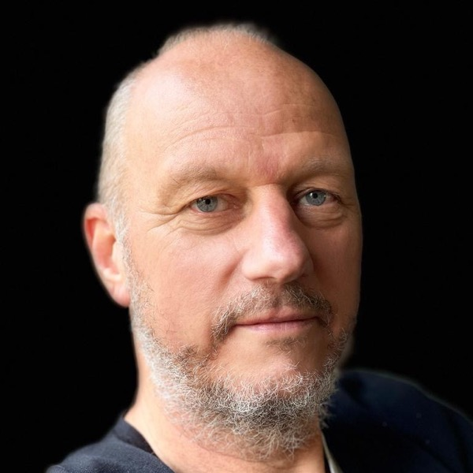

Hessel Oosterbeek is Emeritus Professor of Economics at the University of Amsterdam and a researcher at VU University Amsterdam.
His main research interests focus on the economics of education, development economics, and impact evaluation.
Here are some related pages
and a CV in pdf format.